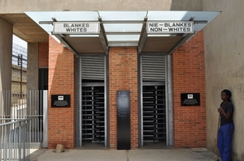
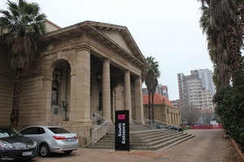
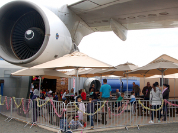

Hlengiwe Simelane
.jpg)
Graskop is a small town in Mpumalanga province, South Africa. It was set up in the 1880s as a gold mining camp but it now serves as a tourist destination and the timber industry.
I would like to learn Mandarin because China trades with many countries all over the world and there are many possible job opportunities in China so learning their language is advantageous for my career and I also dream of residing there in the near future
| English | Mandarin | Pronouncation |
|---|---|---|
| Hello | 你好 | nǐ hǎo |
| My name is Hlengiwe | 我叫 Hlengiwe | wǒ jiào Hle-ngi-weh | Thank you | 谢谢 | xiè xiè |
The Apartheid Museum is the story of the triumph of the human spirit over adversity and oppression. Beginning in 1948, the white elected National Party government initiated a process that turned more than 20 million people into 2nd class citizens, damning them to a life of servitude, humiliation and abuse. Their liberation in 1994 was the climax of a nation’s resistance, courage and fortitude. The path through the museum leads you on a journey beginning with segregation, the cornerstone of apartheid.
The Johannesburg Art Gallery (JAG), is the biggest gallery on the subcontinent. The Gallery is housed in a beautiful building designed by Edwin Lutyens, who was also involved in the design and building of New Delhi. The gallery currently has more than 9 000 artworks in its collection and comprises 15 exhibition halls and sculpture gardens.
The museum, founded in 1986, is a non-profit volunteer organisation collecting and preserving the history of civil aviation in South Africa. Based at Rand Airport in Germiston, the museum houses a fascinating collection of static aircraft including two Boeing 747s, ‘Lebombo’ which flew over Ellis Park at the 1995 Rugby World Cup and a rare Boeing 747SP. Other aircraft include a B737-200, Douglas DC-4 and DC-6, Lockheed Lodestar and a de Havilland Dove. The Museum also houses an extensive collection of airline artefacts and memorabilia from a bygone era. Included is a library with over a thousand aviation-related books and periodicals.
